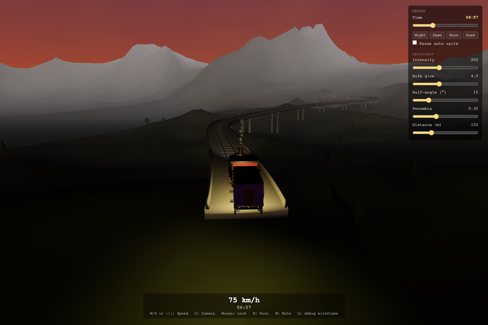

Interactive works by CodePlayee
Web3D图形与互动
01 / Flight simulation
模拟飞行，全球卫星遥感影像叠加真实地形，真实航线，昼夜变化
02 / Geographic modeling
真实世界程序化生成三维模型
03 / Procedural railway
全程序化生成的火车旅行世界

04 / Real-time short film
Web3D致敬吉卜力动漫经典场景
05 / Projection mapping
把一台虚拟投影仪对准哥特式教堂的正立面，让影像顺着扶壁、尖塔与玫瑰窗流淌，在浏览器里复刻一场光影秀。